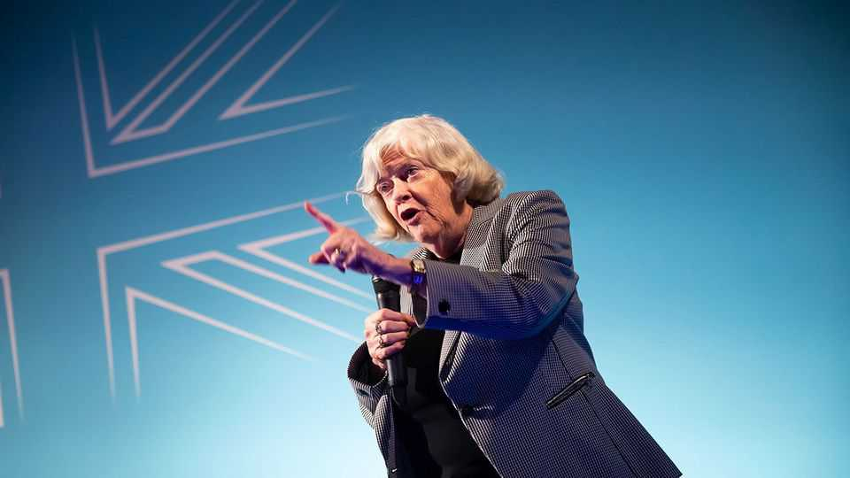

Violence is reshaping British political life
The shocking murder of Ann Widdecombe will only reinforce the trend
July 16th 2026

IT is often said after an atrocity that terrorists will not prevail. Those who practise politics by peaceful means, the mantra goes, will triumph over those who choose violence. If only it were true. The bleaker reality is that, in Britain, the threat of violence against parliamentarians is having the effects that at least some of its perpetrators desire: driving people from public life and shrinking the sphere of debate.
More than a quarter of candidates at the last general election in 2024 said they had considered not standing because of concerns about harassment and intimidation, according to a survey of candidates by the parliamentary authorities. Some 58% said they had been physically attacked or touched against their will; 77% had suffered intimidating acts such as damage to property or being followed in the street. A quarter said it led them to hesitate before making decisions; more than two in five said they avoid getting involved in some policy debates altogether.
Those figures will surely rise. On July 9th Ann Widdecombe, a 78-year-old former Tory MP who became a member of the populist-right Reform UK, was found dead in her remote bungalow in Devon. Police later concluded that she had been murdered in a “targeted attack”. A 28-year-old white British man from Rotherham, 430km away, has been arrested on suspicion of terrorism offences. The motive is unclear.
Ms Widdecombe was the third prominent politician in Britain to be murdered in little over a decade. Jo Cox, a Labour MP, was killed in the street by a far-right extremist in 2016. David Amess, a Conservative lawmaker, was stabbed at a constituency surgery in 2021 by a radical Islamist.
The phenomenon is not new. From the 1970s to the 1990s, Irish republicans targeted mostly senior Conservatives, killing four MPs and narrowly missing the entire cabinet. Yet such acts at least were governed by a degree of organisation and strategy that gave the security services a chance to predict and disrupt them.
Today’s threat is diffuse and unpredictable, the work of individuals rather than groups. Ms Widdecombe seems an improbable target: a Conservative minister in the 1990s, she left Parliament in 2010. When not on “Strictly Come Dancing”, a reality-TV show, or giving interviews about her garden, she spoke on immigration and justice for Reform. Amess’s killer had researched over 250 MPs before attacking the mild-mannered backbencher. Cox had been in Parliament little over a year before she was killed. If they could be targets, so could almost anyone in public life.
MPs feel under siege. It is impossible to tell the difference between unpleasant cranks and potential murderers. Penny Mordaunt, a former Tory minister, said this week that she had received more than 700 threats to kill or rape her; there hadn’t been a day for four years without a live police investigation or court case into her pursuers.
Protecting MPs has become a significant operation. The task is split between the Parliamentary Security Department and the Metropolitan Police’s Parliamentary Liaison and Investigation Team, which investigates crimes against lawmakers and co-ordinates with provincial police forces. A specialist Security Information and Risk Analysis Service weighs intelligence. MPs’ homes and constituency offices are routinely fitted with arson-proof letter boxes and panic rooms.
The question of what protection MPs are entitled to has become bitterly partisan. On July 14th a man was arrested for threatening on social media to shoot Nigel Farage, Reform’s leader. “I am going to shoot you in the head if you win,” he wrote. Reform accuses the police and government of purposefully denying its leaders adequate security for political reasons, a charge the authorities deny. It has an interest in having such a row: the party claimed that a previously undeclared £5m ($6.7m) donation to Mr Farage, now subject to intense scrutiny, was for the purpose of private security arrangements.
It is often said, after an attack, that violence will not change a country’s way of life. But the fear of violence is now woven deeply into the fabric of British politics. ■
For more expert analysis of the biggest stories in Britain, sign up to Blighty, our weekly subscriber-only newsletter.